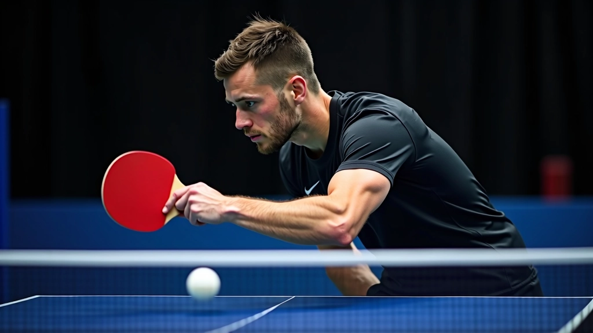
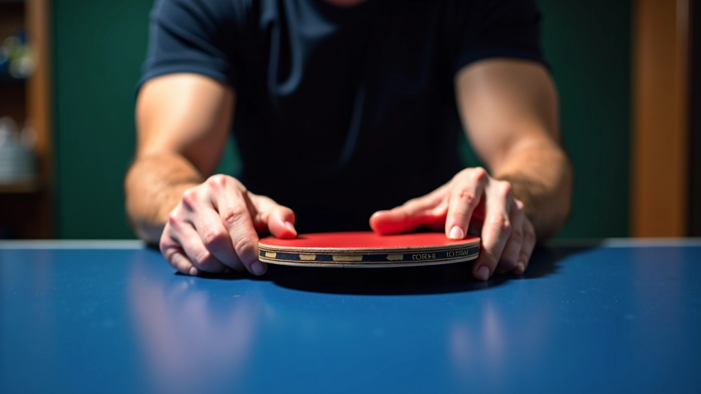
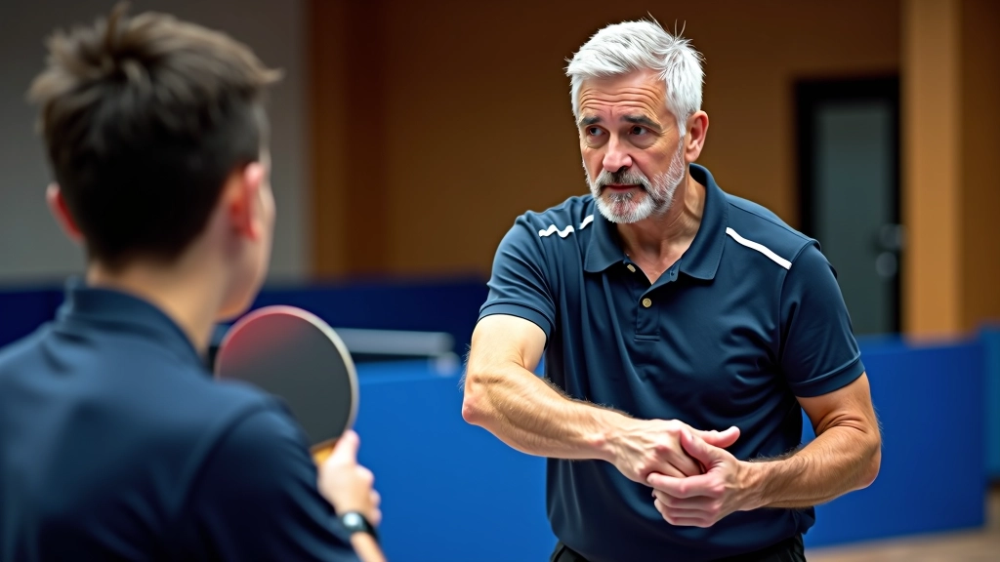

أساسيات قبضة القلم: الخطوات الأولى الصحيحة
تعلم كيفية الإمساك الصحيح بالمضرب وتجنب الأخطاء الشائعة التي يرتكبها المبتدئون ف...
اقرأ المزيداكتشف كيفية استخدام حركات المعصم والأصابع بشكل صحيح لتحسين دقتك والتحكم في سرعة الكرة وانحنائها
المعصم والأصابع هما المحرك الحقيقي للضربات الفعّالة في تنس الطاولة. ليس الذراع وحده، بل التحكم الدقيق من هذه المناطق يحدد الفارق بين لاعب عادي ولاعب محترف. عندما تتقن حركات المعصم والأصابع، ستلاحظ تحسناً فوراً في دقتك وسرعة ردود أفعالك.
في هذا الدليل، سنغطي كل ما تحتاج لمعرفته عن التحكم الدقيق في الضربات. من الأساسيات إلى التقنيات المتقدمة، ستتعلم كيفية استخدام معصمك وأصابعك لتحقيق نتائج حقيقية على الطاولة.
الكثير من اللاعبين يبدأون بموضع معصم خاطئ، وهذا يقيد كل حركاتهم لاحقاً. المعصم يجب أن يكون في موضع محايد — ليس منحنياً للداخل وليس مرفوعاً جداً. تخيل أن معصمك يشير للأمام بشكل طبيعي، كما لو كنت تصافح شخصاً ما.
الموضع الصحيح يسمح لك بـ:
جرب هذا التمرين البسيط: امسك المضرب بموضع محايد للمعصم وحاول رفع المضرب ببطء للأمام. هل تشعر بالتوازن؟ هذا هو الموضع الذي تريده. معظم اللاعبين الذين يحسنون هذا يرى تحسناً واضحاً خلال أسبوعين من التدريب المنتظم.


أصابعك ليست مجرد شيء تمسك به المضرب. إنها تتحكم في كل التفاصيل الدقيقة للضربة. الضغط الذي تمارسه بأصابعك يؤثر على زاوية المضرب وسرعة الكرة بشكل مباشر جداً.
هناك ثلاثة مستويات من التحكم بالأصابع:
المستوى الأول — الإمساك الثابت: أصابعك تمسك المضرب بقوة متساوية. لا تضغط بقوة زائدة، لكن لا تترك المضرب مرتخياً أيضاً. هذا هو الأساس.
المستوى الثاني — التحكم الديناميكي: أثناء الضربة، تزيد الضغط في لحظات محددة. مثلاً، قبل ضرب الكرة مباشرة تضغط أكثر بقليل، ثم تقلل الضغط بعد الضرب. هذا يعطيك تحكماً أفضل بسرعة الكرة.
المستوى الثالث — الحركات الدقيقة: أصابعك تتحرك بحرية كاملة لتغيير زاوية المضرب أثناء الضربة. هذا للاعبين المتقدمين الذين يريدون تنويع ضرباتهم.
الآن تأتي الجزء المهم حقاً. المعصم والأصابع لا يعملان بمعزل عن بعضهما — يجب أن يعملا معاً في حركة متناسقة واحدة. عندما تضرب الكرة، معصمك يتحرك بسلاسة والأصابع تتحكم بدقة زاوية المضرب.
خذ هذه الضربة الشهيرة كمثال — الضربة الأمامية السريعة. المعصم يتحرك بحركة دوّارة للأمام، بينما الأصابع تضغط على المضرب لتثبيت زاويته. كل حركة تدعم الأخرى. إذا أخطأت بأحدهما، ستفقد السيطرة تماماً.
تمرين عملي: جرب الضربة بدون كرة أولاً. ركز على التناسق بين معصمك وأصابعك. تحرك بسلاسة، وكأن كل شيء يحدث في نفس الوقت. لا تتسرع. بعد 50 محاولة، ستشعر بالفرق في جسدك — سيصبح الأمر طبيعياً أكثر.
اقضِ 5 دقائق يومياً في الوقوف مع المضرب بموضع محايد للمعصم. فقط حافظ على الموضع. لا تحاول الضرب. هذا يعلم عضلاتك الموضع الصحيح.
لا تحاول الضرب بقوة عالية من البداية. اضرب الكرة بنصف السرعة، ركز على الموضع والحركة. بعد أسبوعين، زيادة السرعة تدريجياً.
أثناء التمرين، لاحظ كيف يتغير الضغط من أصابعك قبل وبعد الضربة. هذا الاستشعار هو ما يعطيك السيطرة الحقيقية.
بعد كل جلسة تدريب، اكتب ملاحظة بسيطة عن كيف شعرت بالحركة. هل كانت أسلس من أمس؟ هل تحسنت الدقة؟
المعصم والأصابع يحتاجان للراحة. تمرن 3-4 أيام في الأسبوع، واترك يومين أو ثلاثة للاستراحة. الإفراط قد يسبب إصابات.
إذا أمكنك، اطلب من مدرب متمرس أن يراقبك ويخبرك إذا كان موضعك صحيحاً. عين خارجية تلاحظ ما قد لا تراه أنت.

معظم اللاعبين يقعون في نفس الفخاخ. الخطأ الأول — المعصم المرفوع جداً. هذا يحد من حركتك ويسبب إجهاداً غير ضروري. تجنب هذا بالحفاظ على موضع محايد دائماً.
الخطأ الثاني — الإمساك القوي جداً. بعض اللاعبين يمسكون المضرب بقوة قصوى طوال الوقت. هذا يتعب يدك ويقلل حساسيتك. الإمساك الصحيح قوي لكن متوازن.
الخطأ الثالث — نسيان الاسترخاء. بين الضربات، استرخِ أصابعك قليلاً. هذا يعطي عضلاتك فرصة للتعافي ويحسن ردود أفعالك للكرة التالية.
تجنب هذه الأخطاء الثلاثة، وستلاحظ تحسناً ملحوظاً في دقتك وسيطرتك على الكرة.
ركز على الموضع الصحيح للمعصم. 15 دقيقة يومياً، تمارين بدون كرة. هدفك هو أن يصبح الموضع الصحيح طبيعياً.
ابدأ بضرب كرات بطيئة. ركز على التناسق بين معصمك وأصابعك. 20 دقيقة يومياً. الدقة أهم من السرعة.
ابدأ بزيادة سرعة الضربات تدريجياً. 25 دقيقة يومياً. لاحظ كيف يتحسن التحكم مع زيادة السرعة.
طبق ما تعلمته في مباريات حقيقية. 30 دقيقة تدريب، ثم مباراة تدريبية. هذا حيث يصبح كل شيء حقيقياً.
حركات المعصم والأصابع ليست معقدة كما تبدو. المفتاح هو الممارسة المنتظمة والتركيز على التفاصيل. لا تتوقع نتائج فورية — التحسن يأتي تدريجياً على مدى أسابيع.
ابدأ اليوم بـ 15 دقيقة من التمارين الأساسية. لا تحتاج إلى قاعة تدريب فاخرة أو معدات غالية. كل ما تحتاجه هو مضرب وكرات وإرادة. خلال شهر من الالتزام، ستشعر بالفرق الحقيقي في لعبتك.
هل تريد معرفة المزيد عن تقنيات تنس الطاولة الأخرى؟
استكشف المزيد من الأدلةهذا الدليل مخصص للأغراض التعليمية والمعلومات العامة فقط. الممارسة الرياضية تحتاج إلى حذر وتدريب تحت إشراف متخصص. إذا شعرت بألم أو إصابة، توقف عن التمرين واستشر طبيباً متخصصاً. كل شخص مختلف، والتقدم يعتمد على الالتزام والممارسة المنتظمة. النتائج قد تختلف من شخص لآخر.

فريق التحرير والمراجعة
كتبه فريق تحرير أكاديمية طنطا، متخصص في تقديم إرشادات عملية وسهلة المتابعة حول إتقان قبضة القلم في تنس الطاولة.
تعلم كيفية الإمساك الصحيح بالمضرب وتجنب الأخطاء الشائعة التي يرتكبها المبتدئون ف...
اقرأ المزيد
تمارين عملية تساعدك على بناء قوة اليد والمعصم وتحسين التحكم بالمضرب أثناء اللعب ...
اقرأ المزيد
استكشف الفروقات بين الأسلوب الصيني والأسلوب الأوروبي في قبضة القلم واختر ما يناس...
اقرأ المزيد